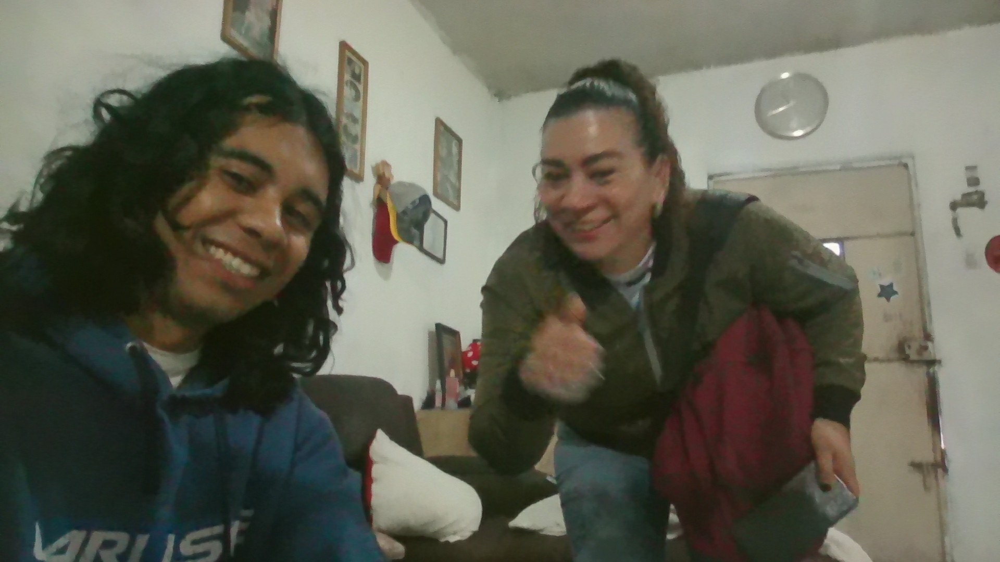

Mi informacion:
Soy Walter García, estudiante Universitario de la Universidad
Mariano Galvez de la Facultad de Ingenieria es Sistemas, actualmente
estoy cursando el primer semestre.
Walter de Jesús García Arriga
wgarciaa16@miumg.edu.gt
5090-26-4803
55539803
Competencias adquiridas
Desarrollo Humano:Autoconocimiento y desarrollo personal
Liderazgo y trabajo en equipo
Pensamiento crítico y toma de decisiones
Planificación y productividad
Adaptabilidad y resiliencia
El porcentaje de mis competencias adquiridas en este curso es el 60%. Por que en un momento de mi vida quise conocer quién era y cómo funciona la psique del ser humano, para eso tenía que conocerme a mí mismo, me adentre en el tema de autoconocimiento y a partir de eso descubrí el pensamiento crítico, el liderazgo, la toma de decisiones, la adaptabilidad y resiliencia, etc. y la verdad aun me parece muy interesante el tema de la espiritualidad, la naturaleza del ser humano, y las jerarquías que dominan el mundo.
Contabilidad 1:
Análisis e interpretación de información financiera
Toma de decisiones económicas
Uso de herramientas contables
El porcentaje de mis competencias adquiridas en este curso es del . La verdad aun me cuesta entender todo el mundo de la contabilidad, pero al menos ya conozco un poco de su historia, y en la práctica aun no entiendo por que algunas cuentas van donde van por que llega a ser un poco contradictorio para la lógica, las fórmulas no son difíciles pero encontrar con que usar las fórmulas aun me cuesta.
Metodología de la investigación:
Capacidad de investigación
Pensamiento innovador
Curiosidad científica
Síntesis de una tesis
El porcentaje de mis competencias adquiridas en este curso son del 45%. Porque al conocer personajes importantes tengo la inspiración para desarrollar mi curiosidad científica, también al conocer más medios de investigación dentro del propio internet mi capacidad de investigación aumenta y dan ganas de innovar.
Lógica de Sistemas:
Pensamiento lógico y analítico
Validación y verificación de información
Aplicación de leyes y principios lógico
Razonamiento matemático
El porcentaje de mis competencias adquiridas en este curso son del 60%. por que es una materia que me gusta en lo personal, pero no le entiendo todo, me esfuerzo por comprenderlo pero aun así hay cosas que me cuestan como por ejemplo la simplificación, me gustan los circuitos electrónicos y esta materia te enseña que de problemas de la vida real se pueden solucionar con circuitos o simplemente con lógica.
Introducción a los Sistemas de Cómputo.
Mantenimiento y soporte técnico
Administración y configuración de redes
Uso de herramientas y sistemas informáticos
Capacidad de organización digital
Desarrollo y gestión básica de sistemas digitales
El porcentaje de mis competencias adquiridas en este curso son del 50%. Porque en el colegio donde estudie ya habíamos visto algunos de estos temas, pero pase un año sin estudiar y se me olvido, pero al volver a escuchar algo que ya había visto antes fue más fácil volver a aprenderlo.